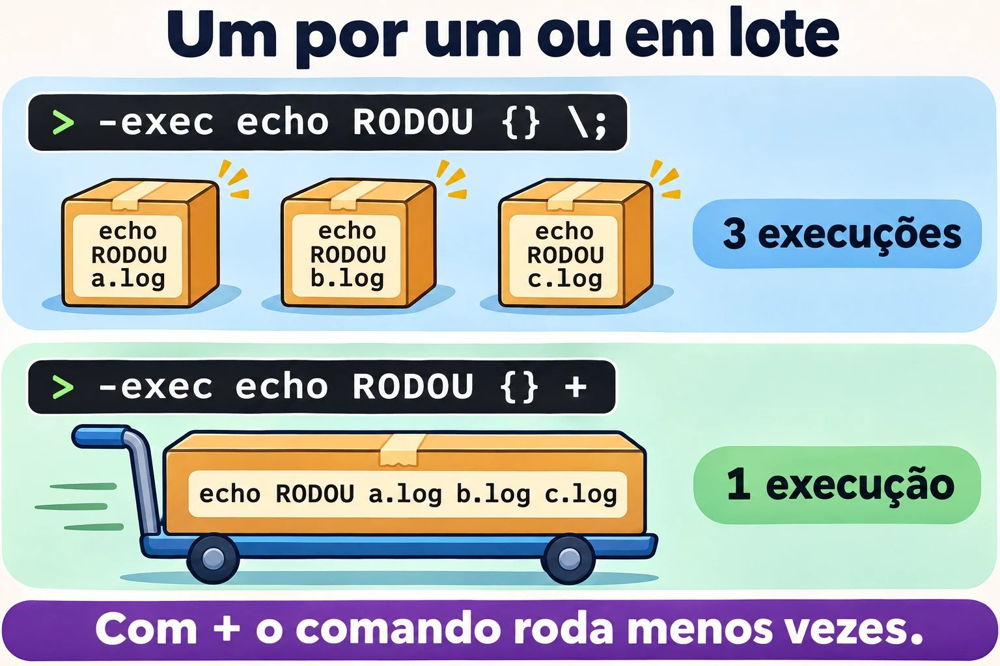
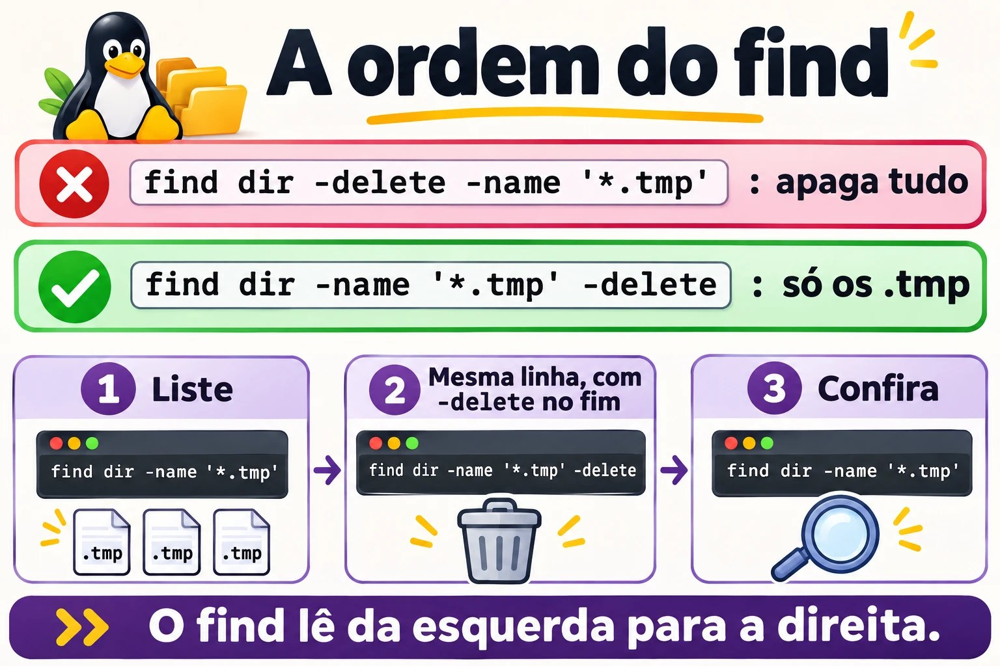

Aula 8.2 · find a fundo
O locate responde rápido, mas só conhece nomes. Quando a pergunta é "o que passou de 1 GB, não foi mexido há 90 dias e pertence a um usuário que já saiu", a ferramenta é o find. Ele também é o comando mais perigoso desta fase, porque age em lote. Aqui você aprende a montar a busca e a provar o resultado antes de agir.
Núcleo desta aula: combinar nome, tipo, dono, tamanho, data e permissão; ler
-mtimee-sizesem cair nos arredondamentos; usar parênteses e-prune; agir com-execexargs; e sempre olhar a lista antes de-delete. O resto é aprofundamento.
| Ficha | |
|---|---|
| Módulo | M8 · Arquivos a fundo, aula 2 de 5 |
| Quando | Semana 12 |
| Ao final | Você encontra arquivos por qualquer critério e age sobre eles com segurança |
| Pré-requisitos | Aulas 1.6, 2.7 e 8.1 |
| Tempo | cerca de 2h |
| Snapshots | m8a2-inicio e m8a2-fim na rocky-lab e na debian-lab |
1 · Aquecimento
Responda antes de ler.
- O que significa
-mtime +30? O arquivo com exatamente 30 dias entra? - O que há de errado em
find . -name *.log? - Qual a diferença entre
-exec comando {} \;e-exec comando {} +?
2 · Por que importa
| O chamado | A resposta errada | O que ela causa |
|---|---|---|
| "Limpa os logs com mais de 30 dias" | find ... -delete sem olhar antes | Apaga junto o que não era log |
| "O servidor travou quando rodei a busca" | Repetir a busca | O find / entrou no NFS. Faltou -xdev |
| "Quem saiu da empresa deixou arquivos" | Procurar pasta por pasta | find -nouser resolve em uma linha |
| "Precisamos auditar os SUID" | Listar só /usr/bin | Um SUID estranho em outra pasta passa despercebido |
| "Copiei a linha do Google e apagou tudo" | Restaurar e não entender | A ordem das opções importa no find |
3 · Modelo mental
O
findé um inspetor andando por todos os corredores. Em cada arquivo, ele lê uma lista de perguntas, da esquerda para a direita. Se alguma responde "não", ele pula para o próximo arquivo. Uma ação, como-delete, também é um item da lista: o inspetor executa no momento em que chega nela. Por isso, a ordem é tudo.
find ONDE PERGUNTAS AÇÃO
find /var -xdev -type f -name '*.gz' -mtime +90 -print
│ │ │ │ │ │
│ │ │ │ │ └─ só agora age
│ │ │ │ └─ mais de 90 dias?
│ │ │ └─ o nome casa?
│ │ └─ é arquivo comum?
│ └─ fica neste disco
└─ de onde começa
E implícito entre as perguntas · -o é OU · \( \) agrupa · ! nega
Ponte Windows
| No Windows | No Linux | Onde a comparação engana |
|---|---|---|
dir /s /b *.log | find . -name '*.log' | O find testa muito mais que o nome |
Get-ChildItem -Recurse -Filter | find | No PowerShell você filtra objetos. No find, a expressão vem nas opções |
forfiles /d -30 /c "cmd /c del @file" | find -mtime +30 -delete | O forfiles conta dias de outro jeito. Sempre liste primeiro |
robocopy /L para simular | find com -print antes da ação | O próprio find não tem modo simulado: quem simula é você |
4 · O essencial
Perguntas
| Por... | Exemplo | Observação |
|---|---|---|
| Nome | -name '*.log', -iname | Sempre entre aspas |
| Caminho | -path '*/cache/*' | Olha o caminho inteiro |
| Tipo | -type f, -type d, -type l | Arquivo, pasta, link |
| Dono | -user student, -group adm | |
| Sem dono | -nouser, -nogroup | UID sem usuário |
| Tamanho | -size +100M, -size -10k | Sufixos c, k, M, G |
| Vazio | -empty | Arquivo ou pasta |
| Modificação | -mtime +30, -mmin -60 | Dias e minutos |
| Acesso, status | -atime, -ctime | O -ctime é mudança de metadados |
| Depois de uma data | -newermt '2026-11-01' | |
| Mais novo que | -newer ARQUIVO | |
| Permissão exata | -perm 644 | Igual a 644 |
| Todos estes bits | -perm -g+w | Precisa ter todos |
| Qualquer um destes | -perm /6000 | SUID ou SGID |
| Limite de descida | -maxdepth 2 | Vem antes das perguntas |
| Não sair do disco | -xdev | Essencial em find / |
Os arredondamentos
| Expressão | O que significa |
|---|---|
-mtime 0 | Modificado nas últimas 24 horas |
-mtime +30 | Idade, em dias inteiros, maior que 30: tem pelo menos 31 dias |
-mtime -7 | Menos de 7 dias |
-size +1M | Mais de 1 MiB |
-size -1M | Só arquivos vazios, porque 500 KB arredonda para cima, para 1M |
Para limites pequenos, use uma unidade menor, como -size -1024k.
Ações
| Quero... | Forma |
|---|---|
| Ver a lista | -print (padrão) ou -ls |
| Formatar | -printf '%s %p\n' |
| Rodar um por arquivo | -exec comando {} \; |
| Rodar em lote, mais rápido | -exec comando {} + |
| Perguntar antes | -ok comando {} \; |
| Apagar | -delete, sempre por último |
| Entregar a outro comando | -print0 | xargs -0 -r comando |


\; o comando roda uma vez por arquivo; com + roda uma vez para todos.Excluir uma pasta da descida
find . -path ./app/tmp -prune -o -name '*.log' -printLeia assim: se for essa pasta, não entre; senão, teste o nome. O -print no final é obrigatório.
Rocky × Debian
O find é o mesmo nas duas. Mudam as pastas e os SUID encontrados. Em cada família, os logs rotacionados podem ter nomes diferentes, então olhe antes de filtrar.
5 · Lab guiado
Passo 0 · Snapshots e árvore. No Proxmox: qm snapshot 201 m8a2-inicio e qm snapshot 202 m8a2-inicio. Na rocky-lab:
mkdir -p ~/lab82/{app/logs,app/tmp,dados,"nome com espaco"}
cd ~/lab82
touch app/logs/hoje.log app/tmp/a.tmp app/tmp/b.bak dados/planilha.csv
touch "nome com espaco/relatorio final.txt"
touch -d '40 days ago' app/logs/antigo.log
touch -d '3 days ago' app/logs/recente.log
truncate -s 5M dados/grande.bin
truncate -s 500K dados/medio.bin
chmod 666 dados/planilha.csv
sudo touch dados/do-root.txt
find . -type f | wc -lSão 10 arquivos.
Passo 1 · Tipo, nome e dono.
find . -type d
find . -type f -name '*.log'
find . -iname '*.CSV'
find . -type f -user root
find . -maxdepth 1Passo 2 · Datas.
find . -type f -mtime +30
find . -type f -mtime -7
find . -type f -mtime 3
find . -type f -newermt "$(date -d yesterday +%F)"Passo 3 · Tamanho, e o arredondamento.
ls -lh dados
find . -type f -size +1M
find . -type f -size -1M
find . -type f -size -1024k -size +0O medio.bin, de 500 KB, não aparece no -size -1M, porque é arredondado para 1M. Com -1024k, ele aparece.
Passo 4 · Permissões.
find . -type f -perm 666
find . -type f -perm -o+w
sudo find / -xdev -type f -perm /6000 -lsO último é a auditoria de SUID e SGID da máquina. Guarde essa saída num arquivo em servidores que você cuida: a comparação com o tempo revela o que é novo.
Passo 5 · Combinar.
find . -type f \( -name '*.tmp' -o -name '*.bak' \)
find . -type f ! -name '*.log'
find . -path ./app/tmp -prune -o -type f -name '*.*' -printPasso 6 · Agir: \; e +.
find . -name '*.log' -exec echo RODOU {} \;
find . -name '*.log' -exec echo RODOU {} +
find . -type f -name '*.txt' -print0 | xargs -0 -r ls -lCom \;, o echo roda uma vez por arquivo. Com +, uma única vez, com todos. O xargs -0 protege o nome com espaço, como você viu na aula 1.6.
Passo 7 · O ritual antes de apagar.
find app/tmp -type f -name '*.tmp'
find app/tmp -type f -name '*.tmp' -delete
find app/tmp -type fMesma linha, com a ação só no final. É esse o procedimento, sempre.
Passo 8 · Quem ocupa mais.
sudo find /var -xdev -type f -printf '%s %p\n' | sort -n | tail -n 5Passo 9 · debian-lab. Repita os passos 0, 3 e 4. O Passo 4 mostra outra lista de SUID.
Decida 1
Preciso apagar os arquivos .gz com mais de 90 dias em /var/log/app. Qual o procedimento?
A) find /var/log/app -mtime +90 -delete. B) Rodar find /var/log/app -type f -name '*.gz' -mtime +90 -print, conferir, e depois trocar -print por -delete. C) rm $(find /var/log/app -name '*.gz').
Marque uma opção antes.
| Se você marcou | Resultado | Por quê |
|---|---|---|
| A | Risco | Sem filtro de nome e tipo, leva o que não era .gz |
| B | Certo | Você aprova a lista e depois age |
| C | Errado | Ignora a idade e quebra em nomes com espaço |
Para fixar: a ação entra por último, depois que a lista foi vista.
Decida 2
Disco quase cheio em um servidor com NFS montado. O que usar?
A) find / -size +1G. B) sudo find / -xdev -type f -size +1G -exec ls -lh {} +. C) locate com .iso.
Marque uma opção antes.
| Se você marcou | Resultado | Por quê |
|---|---|---|
| A | Lento e enganoso | Percorre o NFS, e sem root ignora pastas |
| B | Certo | Fica no disco certo, vê tudo e mostra o tamanho |
| C | Incompleto | Só olha nomes, e nem todo arquivo grande é .iso |
Para fixar: num find /, o -xdev vem junto.
6 · Quebre e conserte
Quebra 1 · O curinga do shell
cd ~/lab82
touch um.log dois.log
find . -name *.logSintoma: find: paths must precede expression.
Diagnóstico: o shell expandiu *.log antes de chamar o find, que recebeu -name dois.log um.log.
Conserto: find . -name '*.log'. O perigo é quando existe só um .log na pasta: não há erro, e o find procura apenas aquele nome.


Quebra 2 · A ordem que apaga tudo
Em uma cópia descartável:
cp -r ~/lab82 ~/lab82-copia
find ~/lab82-copia -delete -name '*.tmp'
ls ~/lab82-copiaSintoma: No such file or directory: a árvore inteira sumiu.
Diagnóstico: o find executa da esquerda para a direita. O -delete veio primeiro e valeu para tudo, e o -name só veio depois.
Conserto: ação no fim e, antes, a lista. Em produção, sem backup, não há conserto: por isso o ritual.
Quebra 3 · O OU sem parênteses
cd ~/lab82
touch app/tmp/c.tmp
find . -name '*.tmp' -o -name '*.bak' -exec ls -l {} +Sintoma: só o .bak aparece.
Diagnóstico: o E liga mais forte que o OU. O -exec ficou só com o lado do -name '*.bak'.
Conserto: find . \( -name '*.tmp' -o -name '*.bak' \) -exec ls -l {} +.
Limpeza
sudo rm -r ~/lab827 · Armadilhas
| Armadilha | O que acontece | Como evitar |
|---|---|---|
-name *.log sem aspas | O shell expande antes | Use aspas |
-delete antes das perguntas | Apaga tudo | Ação sempre no fim |
-size -1M | Só pega vazios | Unidade menor |
-mtime 30 | Exatamente aquela faixa de um dia | +30 ou -30 |
find / sem -xdev | Entra em NFS e /proc | -xdev |
-o sem parênteses | A ação fica em um lado só | \( ... \) |
-exec rm com \; em milhões de arquivos | Muito lento | + ou -delete |
xargs sem -0 | Nome com espaço vira dois | -print0 e -0 |
xargs com lista vazia | Roda o comando sem argumentos | -r |
Rodar sem sudo | Pastas ignoradas, resultado parcial | Veja os erros de permissão |
8 · Quiz
Responda sem olhar. O gabarito está no fim da aula.
- Como listar SUID e SGID em toda a raiz, sem sair do disco?
- Por que
-size -1Mnão acha um arquivo de 500 KB? - O que
-prunefaz, e por que precisa de-print? - Qual a diferença entre
-perm -g+we-perm /g+w,o+w? - Qual é o procedimento seguro para apagar com
find? - Como listar arquivos cujo dono não existe mais?
9 · Cola
Para saber de cor:
| Quero... | Comando |
|---|---|
| Por nome | find CAMINHO -type f -name 'PADRAO' |
| Grandes | sudo find / -xdev -type f -size +1G -ls |
| Antigos | find CAMINHO -type f -mtime +30 |
| Sem dono | sudo find / -xdev -nouser -ls |
| SUID e SGID | sudo find / -xdev -type f -perm /6000 -ls |
| Agir | -exec comando {} + |
| Apagar, depois de listar | ... -delete |
Para consultar:
| Quero... | Comando |
|---|---|
| Excluir pasta | find . -path ./X -prune -o -type f -print |
| Gravável por todos | find / -xdev -type f -perm -o+w |
| Pastas abertas, sem sticky | find / -xdev -type d -perm -o+w ! -perm -1000 |
| Por data | -newermt '2026-11-01' |
| Tamanho e nome | -printf '%s %p\n' | sort -n |
| Perguntar antes | -ok rm {} \; |
Flashcards:
- Ordem → esquerda para a direita; a ação executa onde está.
-mtime +30→ pelo menos 31 dias.-size -1M→ só vazios.\;e+→ um por arquivo, ou todos juntos.- Antes de
-delete→ a mesma linha com-print.
10 · Checklist e fechamento
- [ ] Combino nome, tipo, dono, tamanho, data e permissão
- [ ] Explico os arredondamentos de
-mtimee-size - [ ] Uso parênteses e
-prune - [ ] Uso
-execexargs -0 -rsem medo - [ ] Listo antes de apagar
- [ ] Audito SUID e SGID
Último exercício, sem olhar a aula: na debian-lab, encontre em /etc os arquivos .conf modificados nos últimos 30 dias e mostre tamanho e nome de cada um, em uma linha.
Snapshot de fim (no Proxmox):
qm snapshot 201 m8a2-fim
qm snapshot 202 m8a2-fim11 · Na vida real
Missão, só leitura. Num servidor Linux que você administre (ou com autorização), rode apenas:
sudo find / -xdev -type f -size +1G -ls
sudo find / -xdev -nouser -ls | head -n 20
sudo find / -xdev -type f -perm /6000 -ls | wc -l
sudo find / -xdev -type f -perm -o+w -ls | head -n 20
sudo find /var/log -xdev -type f -mtime +90 -ls | head -n 20Perguntas para responder:
- Existe algum arquivo grande que você não conhece?
- Algum arquivo sem dono? De quem era?
- Quantos SUID e SGID existem? Algum fora de
/usr? - Algum arquivo gravável por todos?
Diário: anote as respostas. Não apague nem altere nada.
Amanhã, sem olhar: escreva o comando que acha arquivos .bak com mais de 1 GB e mais de 60 dias, sem sair do disco.
12 · Aprofundar quando quiser
man find, seção EXPRESSION: todas as perguntas, as ações e a ordem de avaliação.-printf: datas, dono e tamanho formatados para relatório.fd: alternativa moderna, fora da instalação padrão.-execdir: roda o comando na pasta de cada arquivo.
DeepTutor (http://10.1.0.149:3782, KB "Curso Linux Sysadmin"):
!explica como o find avalia as expressões da esquerda para a direita!feynman por que -size -1M não acha arquivos de 500 KB!quiz Aula 8.2, 5 perguntas sobre find
Gabarito comentado
Aquecimento
- Idade maior que 30 dias inteiros, ou seja, pelo menos 31. Um arquivo com 30 dias e algumas horas não entra.
- Sem aspas, o shell pode expandir o
*.logantes de ofindcomeçar. - Com
\;, o comando roda uma vez por arquivo. Com+, recebe vários arquivos de uma vez.
Quiz
sudo find / -xdev -type f -perm /6000 -ls.- Porque o tamanho é arredondado para cima, na unidade pedida: 500 KB conta como 1M, que não é menor que 1M.
- Impede o
findde descer naquela pasta. Com-o, sem o-printexplícito, o resultado inclui a própria pasta podada. - O
-exige todos os bits citados. O/aceita qualquer um deles. - Rodar a linha completa com
-print, conferir e só então trocar pela ação. sudo find / -xdev -nouser -ls.